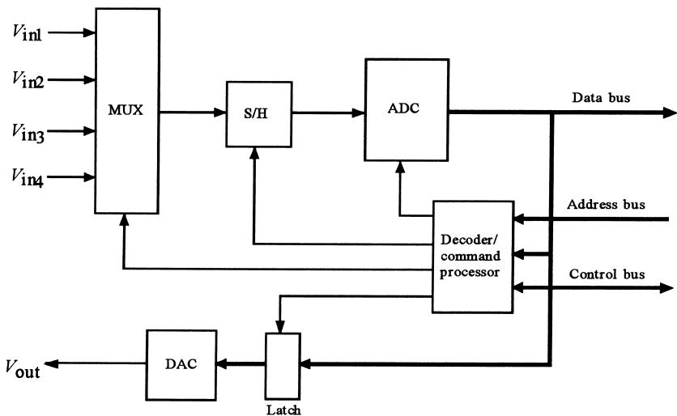
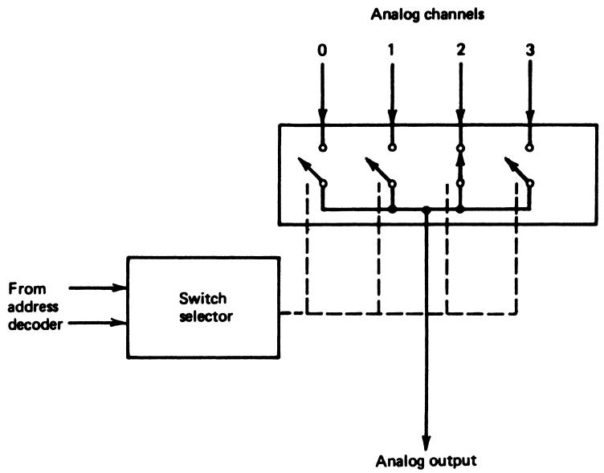
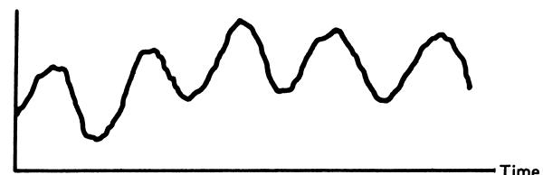
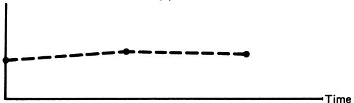
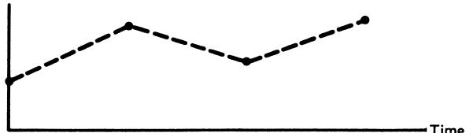
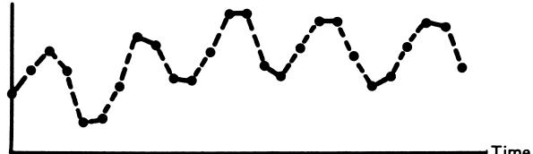
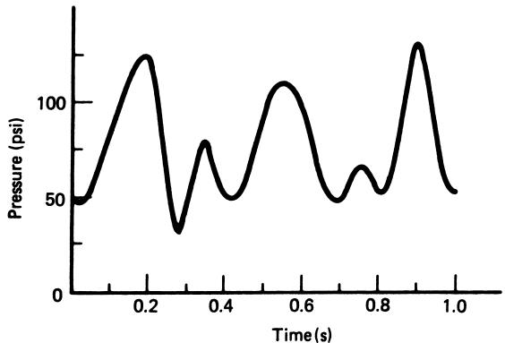
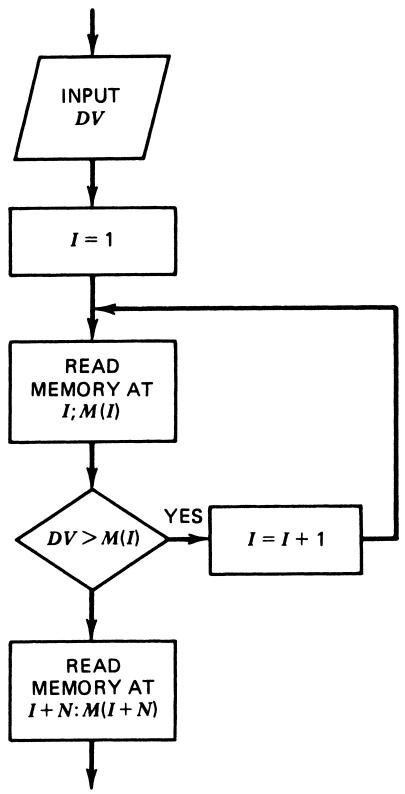

Data‑Acquisition Systems and Digital Data
Instruments 3.3
Imron Rosyadi
Learning Objectives
By the end of this session, you should be able to:
- Describe the main hardware blocks of a PC plug‑in data‑acquisition board (DAS).
- Explain how software talks to a DAS using I/O port addresses, status bits, and interrupts.
- Compute ADC resolution and interpret what “ignorance about the value” really means.
- Choose an appropriate sampling rate for a control application, and relate it to Nyquist.
- Derive or apply simple linearization relationships (equation-based and table look‑up).
Roadmap
- DAS hardware in PC-based systems
- DAS software and basic data‑acquisition sequence
- Example: programming a DAS (channel selection + timeout)
- Digital measurement characteristics
- Resolution and quantization
- Sampled‑data systems and sampling rate choice
- Linearization of sensor outputs
- Equation‑based
- Table look‑up
- Key takeaways and formula summary
4.1 DAS Hardware – Big Picture
A data‑acquisition system (DAS) board for a PC expansion slot typically includes:
- Analog inputs (multiple channels)
- Analog multiplexer (MUX)
- Sample‑and‑hold (S/H)
- Analog‑to‑digital converter (ADC)
- Digital‑to‑analog converter (DAC) and output latch
- Address decoder / command processor
- Bus interface to the PC (data, address, control lines)

PC Bus and Expansion Slots
In a traditional PC:
The CPU communicates with devices via bus lines:
- Data bus
- Address bus
- Control lines (read/write, interrupt, etc.)
The motherboard exposes expansion slots (ISA/PCI/PCIe) using a standard pinout.
A DAS is a plug‑in board that:
- Connects to this bus
- Decodes addresses
- Presents registers for control, status, and data
Core DAS Blocks – ADC and Sample‑and‑Hold
ADC (Analog‑to‑Digital Converter)
- Often successive‑approximation type
- Converts held analog voltage to an \(n\)‑bit code
- Conversion time dominates total sample time
Sample‑and‑Hold (S/H)
- Captures and holds the input voltage while ADC converts
- Has its own acquisition time (time to “settle” to the input)
Overall single‑sample delay:
\[ t_\text{sample} \approx t_\text{acq} + t_\text{conv} \]
Why S/H?
- While the ADC is stepping through bits, the input must not change.
- The S/H “freezes” the analog signal long enough to get a reliable binary code.
ECE analogy:
- Think of S/H like a zero‑order hold but in reverse: instead of holding the DAC output, we briefly hold the ADC input.
Tip
A faster ADC is useless if the S/H cannot acquire quickly enough for your signal bandwidth.
Analog Multiplexer (MUX) – Many Inputs, One Converter
The Analog MUX lets one ADC serve multiple input channels.
- Each input channel is a different analog source.
- MUX acts like an electronically controlled multi‑position switch.
- Controlled by digital lines from the DAS command processor.
The DAS can:
- Select channels one at a time (on demand), or
- Be programmed to scan channels sequentially.

Address Decoder / Command Processor
The PC selects DAS functions using the address bus and control lines.
The address decoder / command processor on the DAS:
- Watches for its base I/O address (e.g., 300H).
- Decodes offsets (base + 0, base + 1, …) as different registers:
- Channel select register
- Command register (start convert, reset, etc.)
- Status register (EOC bit, error bits, etc.)
- Data register (ADC output, DAC input)
It then issues appropriate internal signals to:
- The MUX (which channel?)
- S/H (sample or hold?)
- ADC (start conversion)
- DAC (update output)
Note
From the CPU’s perspective, a DAS is just a set of I/O ports that obey a defined register map and bit semantics.
DAC and Latch – Analog Outputs
Many DAS boards also provide analog outputs:
- Latch:
- Holds the digital value written by the CPU.
- Ensures stable input to the DAC between updates.
- DAC:
- Converts that latched digital value to an analog voltage/current.
- Often unipolar (e.g., 0–10 V) or bipolar (e.g., −10 to +10 V).
- Latch:
Used to:
- Drive actuators in control systems.
- Output test waveforms in instrumentation labs.
4.2 DAS Software – Talking to the Board
When the CPU wants a sample from channel \(k\):
- Select channel
- Write appropriate bits to a channel select register (e.g., base + 0).
- Start conversion (SC)
- Write a control word to a command register (e.g., base + 1).
- Internally, DAS:
- Switches MUX to channel \(k\)
- Puts S/H into hold mode
- Starts ADC conversion
- Wait for EOC (end of convert)
- Poll a status register or
- Wait for an interrupt that signals EOC.
- Read result
- Read data register (e.g., base + 0) to get the ADC’s digital output.
- (Optional) Write DAC
- Write digital value to DAC register (e.g., base + 2).
Flow of a Simple Polling‑Based Acquisition

Protecting Against DAS Failure – Timeout
Problem: in a simple polling loop, if EOC never happens, CPU is stuck forever.
Solution: introduce a timeout mechanism:
- Start a software counter or use a hardware timer.
- Loop while:
- EOC bit is not set, and
- Timeout has not expired.
- If timeout expires before EOC:
- Signal ERROR and jump to error‑handling routine.
Important
In control systems, hanging in a loop is unacceptable: actuators may stay at stale outputs, causing unsafe operation. Timeouts are critical for fault‑tolerant control.
Example 25 – DAS Specification Recap
A DAS has:
- 8 analog input channels.
- 8‑bit bipolar ADC, \(V_\text{ref} = 5\) V, \(t_\text{conv} = 25 \,\mu\text{s}\).
- S/H acquisition time \(t_\text{acq} = 10 \,\mu\text{s}\).
- 8‑bit unipolar DAC, \(V_\text{ref} = 10\) V.
I/O addresses (base selectable from 000H to FFFH; use base = 300H):
- BASE + 0
- READ: inputs data sample from ADC.
- WRITE: selects input channel
- \(b_0\) set → channel 0
- …
- \(b_7\) set → channel 7
- BASE + 1
- READ: inputs ADC status; EOC indicated by \(b_7\) going low.
- WRITE:
- if \(b_7\) is high: initializes the DAS
- if \(b_7\) is low: issuing SC by taking \(b_0\) low
- BASE + 2
- READ: no action
- WRITE: sends data to DAC
Task: flowchart to take a sample from channel 3, with 100 µs timeout, then jump to ERROR if EOC not issued.
Example 25 – Flowchart Logic (Conceptual)

Interactive Exercise – Simple DAS Polling Logic (Pseudo‑C)
5 Characteristics of Digital Data – Big Picture
When we digitize analog signals and control them by computer, we pay a price for many advantages:
Pros: multi‑loop control, software flexibility, noise immunity, linearization, self‑tuning, error correction, failure recovery.
Cons:
- Finite resolution → we lose continuous knowledge of the variable’s value.
- Sampling in time → we only know values at discrete instants.
The rest of this section quantifies those cons and shows how to live with them.
5.1 Digitized Value – ADC Mapping
For an \(n\)‑bit ADC, with input range \(V_{\min}\) to \(V_{\max}\), the output is an integer code \(N\) satisfying
\[ N = \frac{(V - V_{\min})}{(V_{\max} - V_{\min})} 2^n \tag{29} \]
- \(N\) is the base‑10 equivalent of the binary code (integer).
- Only the integer part of the right‑hand side is used.
So one digital code represents a range of analog input values.
Resolution in volts per least significant bit (LSB):
\[ \Delta V = \frac{V_{\max} - V_{\min}}{2^n} \tag{30} \]
Warning
Every ADC reading carries quantization uncertainty of roughly ±½ LSB. You cannot control more finely than this.
Interactive – Compute ADC Code and Resolution
Example 26 – System Description
A temperature \(T\) between \(100^\circ\text{C}\) and \(300^\circ\text{C}\) is:
- First mapped to a 0–5 V signal (ideal linear transducer).
- Then applied to an 8‑bit ADC with \(V_\text{ref} = 5\) V.
Questions:
- What is the actual measurement range?
- What is the resolution in °C/bit?
- What ADC hex output corresponds to \(T = 169^\circ\text{C}\)?
- What temperature does an ADC output of C5H represent?
We will step through the important ideas.
Example 26 – Resolution Calculation
Temperature span:
\[ T_\text{span} = 300^\circ\text{C} - 100^\circ\text{C} = 200^\circ\text{C} \]
With \(n = 8\) bits: \(2^8 = 256\) codes.
Resolution (Equation 30, applied to temperature):
\[ \Delta T = \frac{200^\circ\text{C}}{256} \approx 0.78^\circ\text{C} / \text{bit} \]
Interpretation:
- 1 LSB step corresponds to about \(0.78^\circ\text{C}\).
- At any reading, you are uncertain by about this amount.
Note
If your control spec is ±0.2°C, this measurement system cannot support it, regardless of how good your controller algorithm is.
Example 26 – Limits of Measurement Range
The ADC saturates near its extremes:
Highest code is FFH = 255. It appears at a voltage just below 5.0 V:
- LSB size in volts: \(\Delta V = 5/256 = 0.01953\) V.
- Code FFH covers from \(5.0 - \Delta V\) up to (but not including) 5.0 V → roughly 4.98 V to 5.00 V.
Similarly, code 00H covers from 0 V up to \(\Delta V\) (≈0.0195 V).
Mapping voltage back to temperature (0–5 V ↔︎ 100–300°C):
- 0 V ↔︎ 100°C
- 5 V ↔︎ 300°C
So:
- 00H corresponds to \(T < 100.78^\circ\text{C}\).
- FFH corresponds to \(T > 299.22^\circ\text{C}\).
Therefore, the usable measurement range is:
- From about \(100.78^\circ\text{C}\) to \(299.22^\circ\text{C}\).
Example 26 – Code for 169°C
We use Equation (29) with \(V_{\min} \equiv T_{\min} = 100^\circ\text{C}\), \(V_{\max} \equiv T_{\max} = 300^\circ\text{C}\).
\[ N = \frac{169 - 100}{300 - 100} \cdot 2^8 = \frac{69}{200} \cdot 256 \approx 88.32 \]
Take integer part: \(N = 88_{10}\).
Convert 88 to hex:
- \(88_{10} = 58_\text{H}\).
So \(169^\circ\text{C} \rightarrow 58\text{H}\).
Alternate way:
- \(N \approx \dfrac{T-100}{\Delta T} = \dfrac{69}{0.78} \approx 88.5 \rightarrow 58\text{H}\).
Example 26 – Temperature from Code C5H
Now reverse the relationship.
C5H in hex →
- \(C_{{16}} = 12_{10}\), \(5_{16} = 5_{10}\), so
- \(N = 12 \cdot 16 + 5 = 192 + 5 = 197_{10}\).
Use Equation (29) solved for \(T\):
\[ N = \frac{T - 100}{300 - 100} \cdot 256 \Rightarrow T = \frac{N \cdot 200}{256} + 100 \]
Plug in \(N = 197\):
\[ T = \frac{197 \cdot 200}{256} + 100 \approx 253.9^\circ\text{C} \]
Interpretation:
- Code C5H represents all temperatures in roughly a 0.78°C band around 253.9°C.
- We cannot distinguish exactly where in that band the true temperature lies.
Resolution vs. Noise vs. Bits
Increasing bits improves resolution:
- 8 bits → 1 part in 256.
- 16 bits → 1 part in 65,536.
Example: 16‑bit ADC, \(V_\text{ref} = 5.0\) V:
\[ \Delta V = \frac{5.0}{65{,}536} \approx 76.3 \,\mu\text{V} \]
In industrial environments, electrical noise (mV level) often exceeds LSB by orders of magnitude.
Caution
Extra bits do not help if your analog front end is too noisy. Always design filters, shielding, and grounding to match the ADC’s effective resolution.
5.2 Sampled Data Systems – Discrete in Time
In digital control systems, we also have discrete time knowledge:
- The computer samples the variable only every \(t_s\) seconds.
- Sampling frequency: \(f_s = 1/t_s\).
Consequences:
- We do not know what the variable does between samples.
- The control algorithm assumes certain smoothness or bounded frequency content of the process.
There are both:
- Maximum sampling rate (limited by ADC + computation time).
- Minimum sampling rate (to capture the process dynamics).
Visualizing Sampling – Figure 33




- (a) Actual (continuous) signal.
- (b) Sampling too slow → poor reconstruction, lost detail.
- (c) Aliasing: signal appears to have a false low‑frequency component.
- (d) Sampling fast enough → essential features preserved.
Key idea: you must sample fast enough to capture the fastest significant component of the signal.
Practical Rule: 10× Max Signal Frequency
A reasonable engineering rule for control applications:
\[ f_s \approx 10 f_{\max} \tag{31} \]
- \(f_s\): sampling frequency
- \(f_{\max}\): highest frequency component of interest in the signal
Equivalently: about 10 samples per shortest signal period.
- Enough points to reconstruct basic shape and behavior.
- Easier to design stable control algorithms.
Important
This 10× rule is more conservative than Nyquist’s 2× rule, aiming at robust practical control, not just mathematical signal reconstruction.
Example 27 – Choosing \(t_s\) from Data
Given pressure data (Figure 34):

We observe from the plot:
Shortest time between peaks ≈ 0.15 s.
So, maximum significant frequency:
\[ f_{\max} \approx \frac{1}{0.15} \approx 6.7 \,\text{Hz} \]
Using Equation (31):
\(f_s = 10 f_{\max} \approx 67 \,\text{Hz}\).
Maximum sample period:
\[ t_s = \frac{1}{f_s} \approx 0.015 \,\text{s} = 15 \,\text{ms} \]
So the computer control system should not sample slower than every 15 ms.
Nyquist vs. 10× Rule – No Contradiction
Nyquist Theorem:
If a signal is bandlimited to \(f_{\max}\), then sampling at
\[ f_s \ge 2 f_{\max} \]
allows theoretical reconstruction (with ideal interpolation, infinite record length).
Practical control:
- Industrial signals are not perfectly bandlimited (noise, disturbances).
- Filters can impose an effective \(f_{\max}\), but the real world is messy.
- Sampling only at \(2 f_{\max}\) yields minimal information, and reconstruction may require many samples and heavy processing.
So Equation (31) (10× rule) is a practical compromise:
- More samples → better tracking of real‑world, non‑periodic data.
- Enough information to design and tune controllers.
Tip
Use Nyquist (2×) as a hard lower bound and the 10× rule as a practical design target.
Example 28 – Networked Control and Cycle Time
A networked control system has:
- Network cycle time = 450 ms for sensor → controller.
- Need another 225 ms for controller → actuator response via network.
Assume computation time negligible.
Total round‑trip “sample” time:
\[ t_s = 0.45 \,\text{s} + 0.225 \,\text{s} = 0.675 \,\text{s} \]
So sampling frequency:
\[ f_s = \frac{1}{0.675} \approx 1.48 \,\text{Hz} \]
Using Equation (31):
\[ f_{\max} \approx \frac{f_s}{10} \approx 0.148 \,\text{Hz} \]
Which corresponds to a period of about
\[ T_{\max} = \frac{1}{0.148} \approx 6.8 \,\text{s} \]
Interpretation:
- You can only effectively control periodic variations slower than about 0.148 Hz (≈7 s per cycle).
- Faster oscillations will not be adequately sampled and controlled.
5.3 Linearization – Why We Need It
Real sensors often have nonlinear response:
- Example: \(V \propto \sqrt{p}\), or complicated thermocouple curves, RTD self‑heating, etc.
But control algorithms usually prefer a variable that is:
- Linearly related to the physical quantity (e.g., pressure, temperature).
Thus, in software we must linearize:
- Equation inversion (when a usable formula exists).
- Table look‑up (when only tabulated calibration data is available or equation is too complex).
Linearization by Equation – Concept
Suppose a transducer provides:
\[ V = K \sqrt{p} \tag{32} \]
Then, after scaling to a digital number \(DV\) by ADC,
\[ DV \propto \sqrt{p} \tag{33} \]
Desired: a digital value \(DP\) that is linearly proportional to \(p\).
Idea:
\[ DP = DV \times DV \propto (\sqrt{p})^2 = p \tag{34} \]
In code:
Then apply scaling and offset so DP equals actual pressure units.
Note
Equation‑based linearization is efficient if a closed‑form inverse exists and can be computed with available arithmetic (fixed‑point or floating‑point).
Example – Working Backward Through ADC
Given pressure 50 to 400 psi, sensor law:
\[ V = 0.385 \sqrt{p} - 2.722 \]
An ADC with 5.0 V reference outputs 0–255 codes (00H–FFH) over this pressure range.
Relationship between \(DV\) (ADC code) and \(V\):
\[ DV = \frac{V}{V_\text{ref}} 2^8 = \frac{V}{5} \cdot 256 \]
So
\[ V = \frac{5}{256} DV \]
Plug into the sensor law:
\[ 0.385 \sqrt{p} - 2.722 = \frac{5}{256} DV \]
Solve for \(p\):
[ = ]
[ p = ( DV + )^2 ]
Numerically simplified to:
\[ p = (0.00507 DV + 7.071)^2 \]
So in software:
Now p equals actual pressure in psi.
Linearization by Table Look‑up – Idea
When no simple equation is available or equation evaluation is expensive:
Build a table:
- Column 1: input code \(DV\) (or voltage, etc.).
- Column 2: corresponding physical value (temperature, pressure, etc.).
Store it in memory as two contiguous arrays:
- \(X[0..N-1]\): input codes in ascending order.
- \(Y[0..N-1]\): corresponding physical values.
For each measurement:
- Read \(DV\).
- Search \(X\) to find where \(DV\) fits.
- Return corresponding \(Y\) value (potentially interpolating between entries).
This mimics what humans do with thermocouple tables.
Flowchart for Table Look‑up (Figure 35)

Key steps:
- Input measurement \(M\) (e.g., \(DV\)).
- Initialize index \(I = 0\).
- Compare \(M\) with table entry \(X[I]\).
- While \(M > X[I]\) and \(I < N\): increment \(I\).
- If exact match, take \(Y[I]\) as the physical value.
- Else, interpolate between \(X[I-1], X[I]\) and \(Y[I-1], Y[I]\).
Interactive – Simple Table Look‑up with Interpolation
Summary – Key Points
- DAS Hardware
- PC‑based DAS boards connect via expansion slots and appear as I/O ports.
- Core blocks: MUX, S/H, ADC, DAC, latch, address decoder/command processor.
- DAS Software
- CPU selects channel, issues start‑convert, waits for EOC, then reads data.
- Must handle timeouts and/or use interrupts for robustness.
- Digital Measurements
- ADC mapping: \(N = \dfrac{(V - V_{\min})}{(V_{\max} - V_{\min})}2^n\).
- Resolution: \(\Delta V = \dfrac{V_{\max} - V_{\min}}{2^n}\).
- Quantization introduces an unavoidable “ignorance interval.”
- Sampled‑Data Considerations
- Sample period \(t_s\) and frequency \(f_s = 1/t_s\).
- Use practical rule \(f_s \approx 10 f_{\max}\) in control applications.
- Nyquist (2×) is a theoretical lower bound, not always practical.
- Linearization
- Equation‑based: invert sensor law and ADC scaling.
- Table look‑up: store calibration pairs and interpolate at runtime.
Formula Summary
- ADC Code from Input Voltage
\[ N = \frac{(V - V_{\min})}{(V_{\max} - V_{\min})} 2^n \]
- Resolution in Input Units
- Voltage (or any physical quantity mapped linearly):
\[ \Delta V = \frac{V_{\max} - V_{\min}}{2^n} \]
- Sampling Period and Frequency
\[ t_s = \frac{1}{f_s}, \quad f_s = \frac{1}{t_s} \]
- Practical Sampling Rule for Control
\[ f_s \approx 10 f_{\max} \]
- Nyquist Sampling Criterion
\[ f_s \ge 2 f_{\max} \]
- Example Linearization Equation
From ADC code \(DV\) to pressure \(p\) (psi):
\[ p = (0.00507\,DV + 7.071)^2 \]
Closing Thought
In digital instrumentation and control, the hardware (DAS) and software (sampling, coding, linearization) must be co‑designed. You cannot fix poor resolution, too‑slow sampling, or nonlinear sensor behavior purely with clever software afterward—planning these aspects up front is essential to building reliable ECE systems.